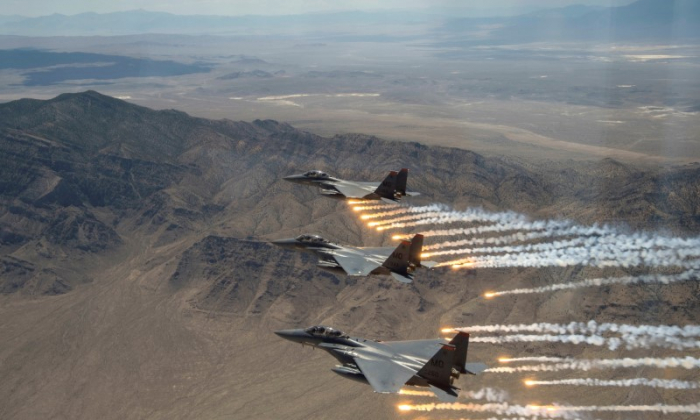

Growth
As an officer in the Indian Air Force, the sky is the limit for you. You start your career as a Flying Officer and can rise up to the rank of Air Marshal. The chosen one from the Flying Branch becomes the head of the family i.e. The Chief of Air Staff. To know the exact rank structure for commissioned officers read below.
Junior Level Officers
Flying Officer (Fg Offr):
Taking off a career in Air Force, this is the first rank an officer wears after successful completion of the training.
Flight Lieutenant (Flt LT):
Beginning the climb, Flight Lieutenant is the next rung in the Indian Air Force hierarchy, where you play and important role as a member of a cohesive team.
Executive Level Officers
Squadron Leader (Sqn Ldr):
Taking on bigger responsibilities under your wings, the Squadron Leader undertakes many tasks. Now you are a senior level supervisor.
Wing Commander (Wg Cdr):
Gearing up for the higher grounds the Wing Commander, the next higher rank, takes on additional responsibilities.
Group Captain (Gp Capt):
Taking charge of men and management, you as a Group Captain may command a medium-sized Air Force Station or be an important link in decision making mechanism at various IAF formations.
Director Level Officers
Air Commodore:
An Air Commodore is the next rank and of a Principal Director. You may command a large Air Force Station, or hold Staff Appointments (senior level) at Air HQ/Command HQ.
Air Vice Marshal:
Only the daring few climb this high in the Air Force hierarchy. An Air Vice Marshal is responsible for taking strategic decisions.
Air Marshal:
Just one step below the top of the ladder, the Air Marshal commands a lot of power.
Chief
Air Chief Marshal:
The top of the rung for the best of the best from the flying branch. The Air Chief Marshal heads the Air Force family and is responsible for all strategic and tactical decisions in times of peace and war.